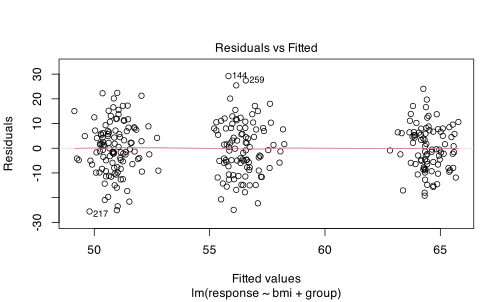
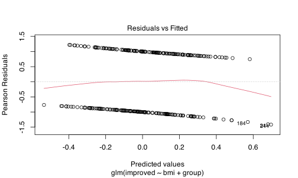
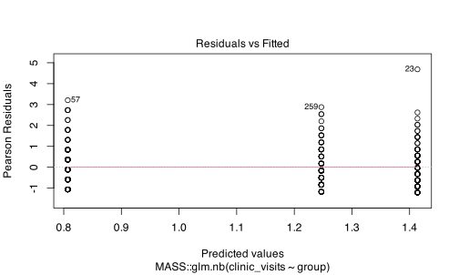
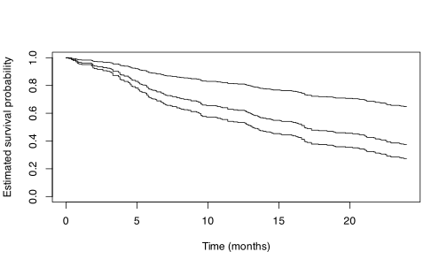
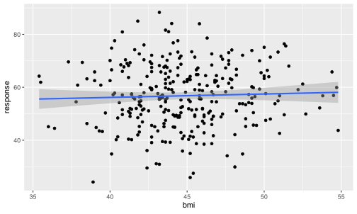
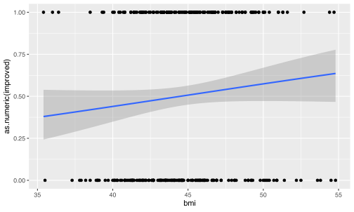
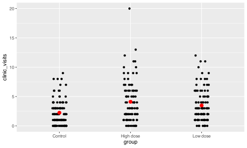
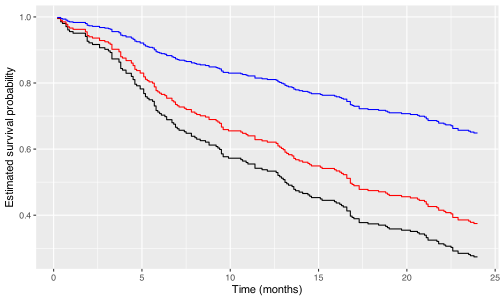

viz_data = readr::read_csv("data/viz_data.csv")
followup_data = readr::read_csv("data/followup_data.csv")
head(viz_data)
#> # A tibble: 6 × 8
#> id group site height weight bmi response outcome
#> <dbl> <chr> <chr> <dbl> <dbl> <dbl> <dbl> <chr>
#> 1 1 High dose Site B 164 119. 44.1 62.1 Improved
#> 2 2 High dose Site A 170. 130. 45.1 55.3 Improved
#> 3 3 High dose Site B 175. 130. 42.7 59.1 Improved
#> 4 4 Low dose Site B 166 118. 42.7 65.9 No change
#> 5 5 High dose Site B 157. 117. 47.3 63.3 Improved
#> 6 6 Low dose Site B 160. 118. 46.3 60.6 Worsened
head(followup_data)
#> # A tibble: 6 × 4
#> id clinic_visits survival_months event
#> <dbl> <dbl> <dbl> <dbl>
#> 1 1 10 9.6 1
#> 2 2 7 4.1 1
#> 3 3 2 4.6 1
#> 4 4 6 24 0
#> 5 5 2 24 0
#> 6 6 6 24 0
# join viz_data with followup_data based on subject id
followup_data = merge(viz_data, followup_data, by = 'id')Regression
You’ve now got summary statistics and hypothesis tests under your belt. Next up is regression! Instead of just testing whether two variables are related, you get to model the relationship itself and use it to make predictions. The good news is that once you’re comfortable calling functions in R, running a regression is really just one more function call away.
Data setup
We will keep using viz_data.csv from before for linear and logistic regression, including its existing group column ("High dose", "Low dose", "Control") as our treatment variable. For negative binomial and Cox regression, we need a couple of variables we don’t have yet (a count outcome and a time-to-event outcome), so you’ll need to download an additional followup_data.csv and move it into your data folder in your project directory before proceeding.
Common regression models
You’ve already met these models conceptually in your stats class, so here we’ll focus on how to actually fit each one in R and what its output looks like.
-
Linear regression models a continuous outcome as a straight-line (or plane, with multiple predictors) function of one or more predictors. It’s the model you’d reach for when your outcome, like
responseorbmi, is a continuous number. - Logistic regression models the probability of a binary outcome (e.g., improved vs. not improved) as a function of one or more predictors, using the logit link to keep predicted probabilities between 0 and 1.
- Negative binomial regression models a count outcome, like number of clinic visits, that is over-dispersed (its variance is bigger than its mean), which is common with real-world count data and is one reason we don’t just use ordinary linear regression on counts.
- Cox proportional hazards model models the time until an event happens (e.g., time until a health outcome occurs), while properly handling patients who haven’t experienced the event by the end of the study (censoring).
Functions for running regressions in R
-
lm()fits linear regression models. You give it a formula describing your outcome and predictors, and adataargument telling it where to find those variables. -
glm()fits generalized linear models, a broader family that includes logistic regression and (with a helper package) negative binomial regression, by letting you specify afamilyargument on top of the same formula anddatastructurelm()uses.
lm() vs. glm(): what’s the difference?
In practice, lm() is really a special case of glm() with the family set to a normal (Gaussian) distribution and an identity link, so anything lm() can do, glm() can also do by writing glm(..., family = gaussian). The reason lm() still exists as its own function is convenience: for ordinary linear regression, its syntax is a touch simpler and some of its helper functions are slightly more direct. Neither function is better than the other in general. You’ll reach for lm() when your outcome is continuous and you don’t need a non-normal family, and glm() whenever your outcome calls for a different distribution, such as logistic or negative binomial regression.
Running regressions in R
Linear regression
lm_fit = lm(response ~ bmi + group, data = viz_data)
summary(lm_fit)
#>
#> Call:
#> lm(formula = response ~ bmi + group, data = viz_data)
#>
#> Residuals:
#> Min 1Q Median 3Q Max
#> -25.5957 -6.7854 -0.4897 7.0522 29.1834
#>
#> Coefficients:
#> Estimate Std. Error t value Pr(>|t|)
#> (Intercept) 42.4959 7.5405 5.636 4.06e-08 ***
#> bmi 0.1877 0.1672 1.122 0.262614
#> groupHigh dose 13.6606 1.4494 9.425 < 2e-16 ***
#> groupLow dose 5.4767 1.4164 3.867 0.000136 ***
#> ---
#> Signif. codes: 0 '***' 0.001 '**' 0.01 '*' 0.05 '.' 0.1 ' ' 1
#>
#> Residual standard error: 10.23 on 296 degrees of freedom
#> Multiple R-squared: 0.2325, Adjusted R-squared: 0.2247
#> F-statistic: 29.88 on 3 and 296 DF, p-value: < 2.2e-16Logistic regression
Logistic regression needs a binary outcome, but outcome in viz_data has three levels (Improved, No change, Worsened). So before fitting the model, we collapse it into a two-level variable indicating whether a patient improved or not.
viz_data$improved = as.integer(viz_data$outcome == "Improved")logistic_fit = glm(improved ~ bmi + group, data = viz_data, family = binomial)
summary(logistic_fit)
#>
#> Call:
#> glm(formula = improved ~ bmi + group, family = binomial, data = viz_data)
#>
#> Coefficients:
#> Estimate Std. Error z value Pr(>|z|)
#> (Intercept) -2.30695 1.49475 -1.543 0.1227
#> bmi 0.05481 0.03319 1.652 0.0986 .
#> groupHigh dose -0.17318 0.28481 -0.608 0.5432
#> groupLow dose -0.24409 0.27874 -0.876 0.3812
#> ---
#> Signif. codes: 0 '***' 0.001 '**' 0.01 '*' 0.05 '.' 0.1 ' ' 1
#>
#> (Dispersion parameter for binomial family taken to be 1)
#>
#> Null deviance: 415.87 on 299 degrees of freedom
#> Residual deviance: 412.34 on 296 degrees of freedom
#> AIC: 420.34
#>
#> Number of Fisher Scoring iterations: 4Negative binomial regression
Negative binomial regression isn’t available directly through glm()’s built-in families. glm.nb() (from the MASS package) fits a negative binomial regression, handling the over-dispersion that a count outcome like clinic_visits often shows.
MASS is not a base R package, so unlike mean(), lm(), or glm(), it does need to be installed once with install.packages("MASS") before you can use it (though many R installations, including the one used to build this book, ship with it already installed since it’s so commonly used). Once installed, MASS extends R with a dedicated function that uses the same formula and data style you’ve already seen.
negbin_fit = MASS::glm.nb(clinic_visits ~ group, data = followup_data)
summary(negbin_fit)
#>
#> Call:
#> MASS::glm.nb(formula = clinic_visits ~ group, data = followup_data,
#> init.theta = 2.287824207, link = log)
#>
#> Coefficients:
#> Estimate Std. Error z value Pr(>|z|)
#> (Intercept) 0.80695 0.08881 9.087 < 2e-16 ***
#> groupHigh dose 0.60674 0.12428 4.882 1.05e-06 ***
#> groupLow dose 0.43996 0.12361 3.559 0.000372 ***
#> ---
#> Signif. codes: 0 '***' 0.001 '**' 0.01 '*' 0.05 '.' 0.1 ' ' 1
#>
#> (Dispersion parameter for Negative Binomial(2.2878) family taken to be 1)
#>
#> Null deviance: 361.01 on 299 degrees of freedom
#> Residual deviance: 335.55 on 297 degrees of freedom
#> AIC: 1342
#>
#> Number of Fisher Scoring iterations: 1
#>
#>
#> Theta: 2.288
#> Std. Err.: 0.346
#>
#> 2 x log-likelihood: -1333.976Cox proportional hazards model
Functions for survival analysis, including the Cox model, are bundled into the survival package rather than base R. Like MASS, it’s not part of base R, so it needs to be installed once with install.packages("survival") if you don’t already have it (it is, however, included with every standard R installation by default, which is why you may not have needed to install it yourself before).
Fitting a Cox model takes two steps. First, you build a Surv() object, which packages your time-to-event variable together with an event indicator into a single object that represents “how long this patient was followed, and whether the event actually happened by the end of that time or not (i.e. they were censored).” This is necessary because a plain numeric time variable on its own doesn’t tell R which patients actually experienced the event and which ones simply hadn’t yet by the time the study ended.
-
Surv()(from thesurvivalpackage) combines a time variable and an event indicator (1for event observed,0for censored) into the special object that survival models expect as their outcome.
Once you have that Surv() object, fitting the model itself follows the same formula and data pattern as lm() and glm().
-
coxph()(from thesurvivalpackage) fits a Cox proportional hazards model, using aSurv()object as its outcome in the formula.
cox_fit = coxph(
Surv(survival_months, event) ~ group,
data = followup_data
)
summary(cox_fit)
#> Call:
#> coxph(formula = Surv(survival_months, event) ~ group, data = followup_data)
#>
#> n= 300, number of events= 166
#>
#> coef exp(coef) se(coef) z Pr(>|z|)
#> groupHigh dose 1.0960 2.9922 0.2012 5.446 5.15e-08 ***
#> groupLow dose 0.8187 2.2676 0.2043 4.007 6.14e-05 ***
#> ---
#> Signif. codes: 0 '***' 0.001 '**' 0.01 '*' 0.05 '.' 0.1 ' ' 1
#>
#> exp(coef) exp(-coef) lower .95 upper .95
#> groupHigh dose 2.992 0.3342 2.017 4.439
#> groupLow dose 2.268 0.4410 1.519 3.384
#>
#> Concordance= 0.62 (se = 0.019 )
#> Likelihood ratio test= 33.87 on 2 df, p=4e-08
#> Wald test = 30.39 on 2 df, p=3e-07
#> Score (logrank) test = 32.87 on 2 df, p=7e-08Accessing values from output objects
Just like the test objects from the previous chapter, regression model objects are list-like, so str() and $ still work on them. But regression output has enough moving parts (coefficients, standard errors, p-values for every predictor) that a few dedicated extraction functions make life easier than digging through str() output by hand.
-
coef()returns just the estimated coefficients from a fitted model, without all the other information bundled alongside them. -
confint()returns confidence intervals for each coefficient. -
summary(model)$coefficientsreturns a table of estimates, standard errors, test statistics, and p-values all at once, which is often the most useful single object to extract when you want to report results.
coef(lm_fit)
#> (Intercept) bmi groupHigh dose groupLow dose
#> 42.4958573 0.1876562 13.6606030 5.4766963confint(lm_fit)
#> 2.5 % 97.5 %
#> (Intercept) 27.6560012 57.3357135
#> bmi -0.1413873 0.5166998
#> groupHigh dose 10.8082297 16.5129762
#> groupLow dose 2.6892864 8.2641062summary(lm_fit)$coefficients
#> Estimate Std. Error t value Pr(>|t|)
#> (Intercept) 42.4958573 7.540536 5.635655 4.063259e-08
#> bmi 0.1876562 0.167196 1.122373 2.626136e-01
#> groupHigh dose 13.6606030 1.449369 9.425209 1.288714e-18
#> groupLow dose 5.4766963 1.416359 3.866743 1.356357e-04It’s easy to assume summary(model) itself is what you extract from, but summary(model) is a separate summary object, not the original model object, and the two don’t have the same pieces inside them. If model$coefficients doesn’t give you what you expected, try summary(model)$coefficients instead, and use str() on both objects to see how they differ.
Plotting results
Now that you can fit each model and pull out the numbers that matter, it’s time to see them. A table of coefficients tells you that a relationship exists, but a plot usually makes it much easier to judge how strong that relationship is and whether it makes sense given your data.
# which = 1 selects just the first of four default diagnostic plots
# (residuals vs. fitted values), rather than showing all four at once
plot(lm_fit, which = 1)
# logistic regression also produces residuals vs. fitted diagnostics,
# even though the underlying model and residual type are different
plot(logistic_fit, which = 1)
# negative binomial models are fit via glm.nb(), so they also inherit
# the same residuals vs. fitted diagnostic plot as the other glm() models
plot(negbin_fit, which = 1)
# a Cox model has no "residuals vs. fitted" concept, so plot() instead
# needs a survival curve object first, built using survfit()
cox_survfit = survfit(cox_fit, newdata = data.frame(group = unique(followup_data$group)))
plot(cox_survfit,
xlab = "Time (months)",
ylab = "Estimated survival probability")
Why plot() “just works” on a model object
You’ve probably noticed that the same plot() call produced three similar-looking diagnostic plots for lm_fit, logistic_fit, and negbin_fit, but something completely different for the Cox model, and that cox_fit needed to be wrapped in survfit() first before plot() would even work on it. This all comes down to plot() being a generic function: it checks the class of whatever you hand it (e.g., "lm", "glm", "survfit") and then dispatches to a specific method written by that package’s author for that exact class.
lm_fit, logistic_fit, and negbin_fit all happen to inherit from "glm" (since lm() and glm.nb() are both special cases of the same underlying framework as glm()), so they all route to the same plot.glm() method and produce the same family of residual diagnostics.
cox_fit, on the other hand, has no plot.coxph() method at all, the authors of the survival package never wrote one, because a fitted Cox model on its own doesn’t contain a single obvious thing to plot. What it does contain is enough information to calculate a survival curve, and that’s exactly what survfit() does: it takes your fitted cox_fit object and produces a new object (of class "survfit") representing the estimated survival probability over time. That new object does have a plot.survfit() method built in, which is why plot(survfit(cox_fit)) works, plot() never actually knows how to handle a "coxph" object directly, but it knows exactly what to do once you’ve converted it into something it does recognize.
Plotting with ggplot2
For a fitted regression line drawn over your raw data, ggplot2’s geom_smooth() is the most direct route, since it can fit the same model internally and draw it for you in one step.
library(ggplot2)
ggplot(viz_data, aes(x = bmi, y = response)) +
geom_point() +
geom_smooth(method = "lm", se = TRUE)
The same approach works for logistic regression, plotting the predicted probability of improved across bmi rather than a raw fitted line.
ggplot(viz_data, aes(x = bmi, y = as.numeric(improved))) +
geom_point() +
geom_smooth(method = "glm", method.args = list(family = "binomial"), se = TRUE)
#> `geom_smooth()` using formula = 'y ~ x'
For the negative binomial model, since the outcome is a count rather than continuous, plotting the raw counts by group alongside their means is often clearer than a single fitted line.
ggplot(followup_data, aes(x = group, y = clinic_visits)) +
geom_jitter(width = 0.1, height = 0) +
stat_summary(fun = mean, geom = "point", size = 3, color = "red")
Plotting a Cox model
You’ve just seen that plot(survfit(cox_fit)) works because survfit() converts your model into a "survfit" object with its own built-in plot() method. Base R’s plot() is genuinely a fine choice here and needs nothing beyond the survival package you’re already using, so it’s a perfectly good default for this chapter.
That said, once you have a survfit object, ggplot2 can still be useful if you’d rather match the visual style of your other plots (for example, keeping consistent themes and colours across a report). Since ggplot2 doesn’t know how to draw a survfit object directly, the key step is pulling the survival curve’s numbers out into an ordinary data frame first, using broom::tidy(), and plotting that data frame with geom_step() instead.
cox_survfit_df = broom::tidy(cox_survfit)
# a not so elegant way of plotting mutliple groups in ggplot2
ggplot(cox_survfit_df, aes(x = time)) +
geom_step(aes(y = estimate.1), color = "black") +
geom_step(aes(y = estimate.2), color = "red") +
geom_step(aes(y = estimate.3), color = "blue") +
labs(x = "Time (months)",
y = "Estimated survival probability",
color = "Group")
Either approach, base plot() on the survfit object or ggplot2 on its tidied data frame, gives you the same underlying survival curve. Which one to reach for often just comes down to whether you want a quick look at your model or a polished plot to match the rest of your report.
It’s easy to call plot() on your model object and assume you’re seeing “the” plot for that model, but as you’ve just seen, the same function produces entirely different output depending on the model’s class, and some of those defaults (like the four-panel lm diagnostics) show more than you actually need at once. Checking what a given plot() method actually draws, using ?plot.lm or ?plot.survfit, is worth doing before you assume the default output is exactly what you want to present.